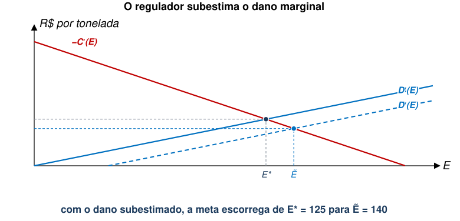
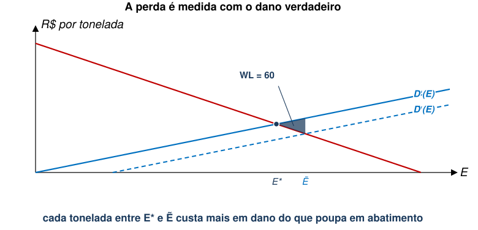
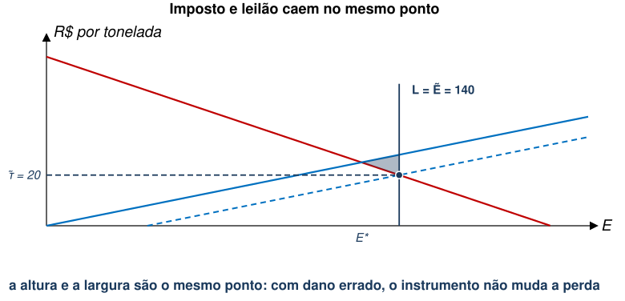
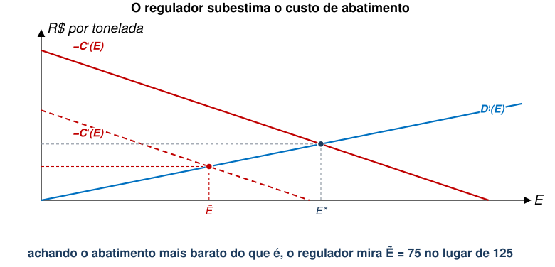
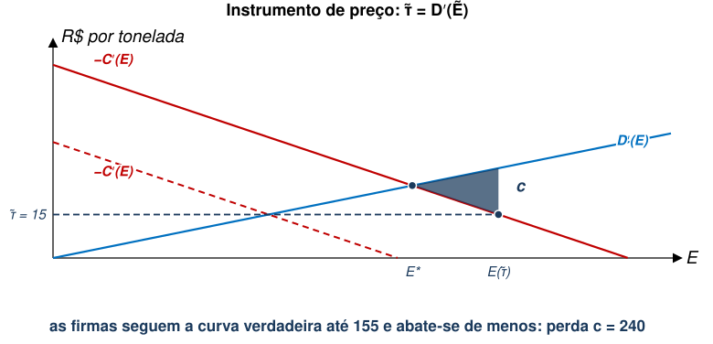
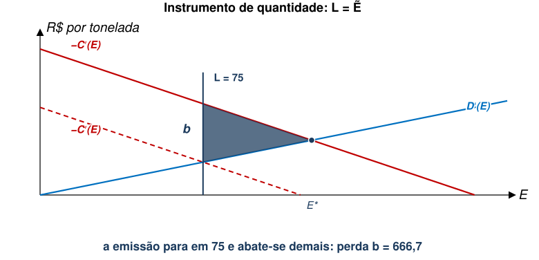
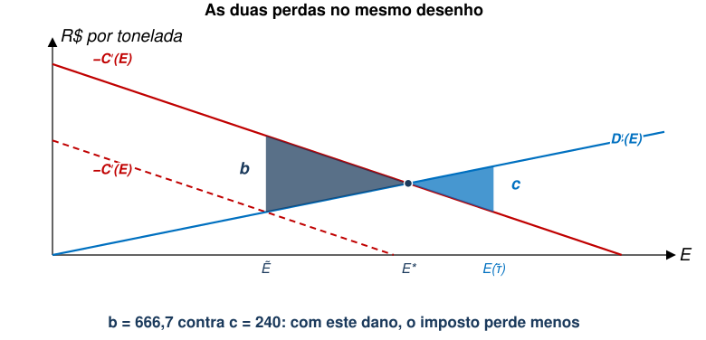
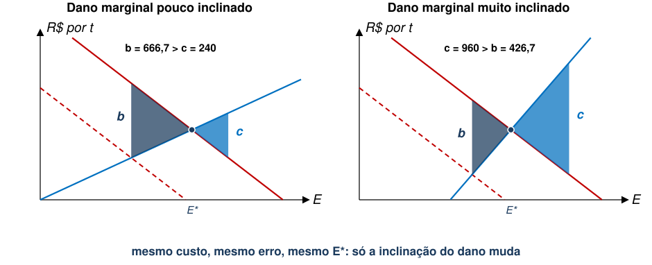
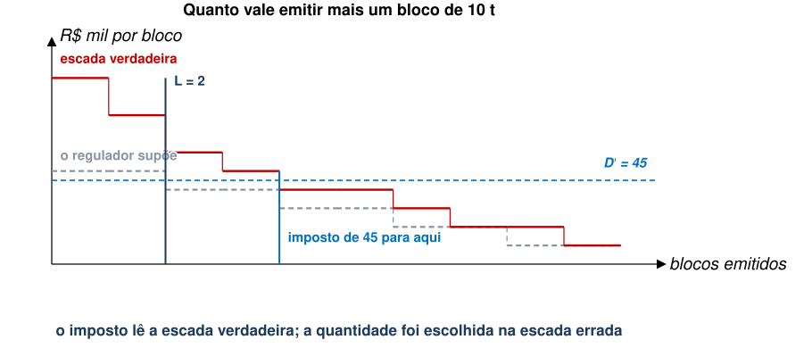
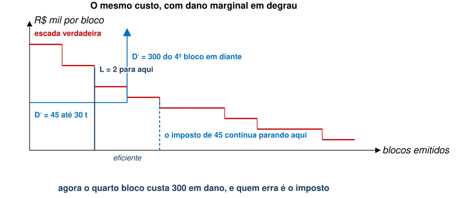

EAE1317 — Economia do Meio Ambiente e dos Recursos Naturais
2026-09-03
Tudo isso sob informação perfeita.
Referência: Phaneuf e Requate, cap. 4
1. Prescrever o regulador diz o que fazer: tecnologia obrigatória ou limite de emissão por fonte.
2. Precificar o regulador põe um preço na emissão: imposto ou subsídio.
3. Limitar quantidade o regulador fixa o total e deixa o mercado repartir permissões.
4. Informar o regulador informa população com inventários de emissão, selos e certificações.
Nas aulas anteriores, assumimos que as funções de danos e custo de abatimento eram conhecidas por todos.
Entretanto, é razoável supor que os agentes não observem perfeitamente essas funções.
Nesta aula, focaremos no caso em que o regulador não tem informação perfeita.
Comecemos com o caso em que o regulador tem informação assimétrica sobre a função de danos.
Suponha que o regulador subestime o dano marginal da poluição agregada.
Qual será a condição de ótimo observada pelo regulador neste caso?
Sabendo que \({\tilde{D}}^{′}\left(E\right)<{D}^{′}\left(E\right)\), teremos \(\tilde{E}>{E}^{*}\) ou \(\tilde{E}<{E}^{*}\). Por quê?

Matematicamente, a perda de eficiência (welfare loss) é dada por:
\[WL=\left[D\left(\tilde{E}\right)+C\left(\tilde{E}\right)\right]-\left[D\left({E}^{*}\right)+C\left({E}^{*}\right)\right]\]
\[=\int_{{E}^{*}}^{\tilde{E}} {D}^{′}\left(E\right)dE-\int_{{E}^{*}}^{\tilde{E}} {C}^{′}\left(E\right)dE\]
Note que a perda é calculada com base na verdadeira função \(D(E)\).

Considere o caso de um imposto sobre emissões.
\[\tilde{\tau} = D'(\tilde{E}) = -{C}^{′}\left(\tilde{E}\right)\to \tilde{E}>{E}^{*}\]
Da mesma forma, se o governo leiloa \(L=\tilde{E} > E^*\) permissões, também teremos:
\[\sigma(\tilde{E}) = D'(\tilde{E}) = -{C}^{′}\left(\tilde{E}\right)\]
Ou seja, ambos os instrumentos levam à mesma alocação ineficiente.

Agora, suponha que o regulador não observe o verdadeiro custo de abatimento agregado.
Neste caso, o regulador escolhe a meta de poluição baseando-se:
Suponha que o regulador subestime o custo de abatimento marginal agregado.
Qual será a condição de ótimo neste caso?
Sabendo que \(-{\tilde{C}}^{′}\left(E\right)<-{C}^{′}\left(E\right)\), teremos \(\tilde{E}<{E}^{*}\) ou \(\tilde{E}>{E}^{*}\). Por quê?

Neste caso, a perda de bem-estar dependerá da política implementada?
Primeiro, analisemos o caso de um imposto \(\tau\) por unidade de \(E\).

Agora, analisemos o caso de leilão de permissões (limite de quantidade).

Analiticamente, temos que:
\[b=\int_{\tilde{E}}^{{E}^{*}} -{C}^{′}(E)dE-\int_{\tilde{E}}^{{E}^{*}} {D}^{′}\left(E\right)dE\]
\[c=\int_{{E}^{*}}^{E\left(\tau \right)} {D}^{′}(E)dE-\int_{{E}^{*}}^{E\left(\tau \right)} -{C}^{′}(E)dE\]
Entretanto, não sabemos dizer se \(b>c\) ou \(b<c\).

Reescreva a função dano: \(D(E,\eta )\).
Proposição
Suponha \(-{\tilde{C}}^{′}\left(E\right)\neq -C′(E)\), e seja \(\tilde{E}\) a meta definida por \(-{\tilde{C}}^{′}\left(\tilde{E}\right)={D}_{E}(\tilde{E},\eta )\). Quanto maior \(\eta\), temos:

É possível mostrar que, sob informação assimétrica, diferença na perda de eficiência entre instrumentos de preço (imposto) e de quantidade (permissões) depende da inclinação relativa das curvas de custo de abatimento marginal e dano marginal (Weitzman 1974).
Quando há incerteza sobre o dano, a perda é a mesma para dois instrumentos diferentes.
As mesmas usinas: cada uma emite 50 t e corta em blocos de 10 t, aos custos abaixo (em R$ mil).
| 1º bloco | 2º | 3º | 4º | 5º | |
|---|---|---|---|---|---|
| Usina A | 10 | 20 | 30 | 40 | 50 |
| Usina B | 20 | 40 | 60 | 80 | 100 |

| Blocos emitidos | Abatimento | Dano | Custo social | |
|---|---|---|---|---|
| Eficiente | 4 | 160 | 180 | 340 |
| Imposto \(\tau =45\) | 4 | 160 | 180 | 340 |
| Permissões \(L=2\) | 2 | 270 | 90 | 360 |
Mesmas usinas, mesma crença do regulador, mudando apenas a curva de danos: acima de 30 t emitidas o rio fica sem oxigênio, e cada bloco a mais causa dano de R$ 300 mil.

| Blocos | Custo social com dano 45 | Custo social com o degrau | |
|---|---|---|---|
| Eficiente | 4 e 3 | 340 | 345 |
| Permissões \(L=2\) | 2 | 360 (perda 20) | 360 (perda 15) |
| Imposto \(\tau =45\) | 4 | 340 (perda 0) | 595 (perda 250) |
EAE1317 — Economia do Meio Ambiente e dos Recursos Naturais